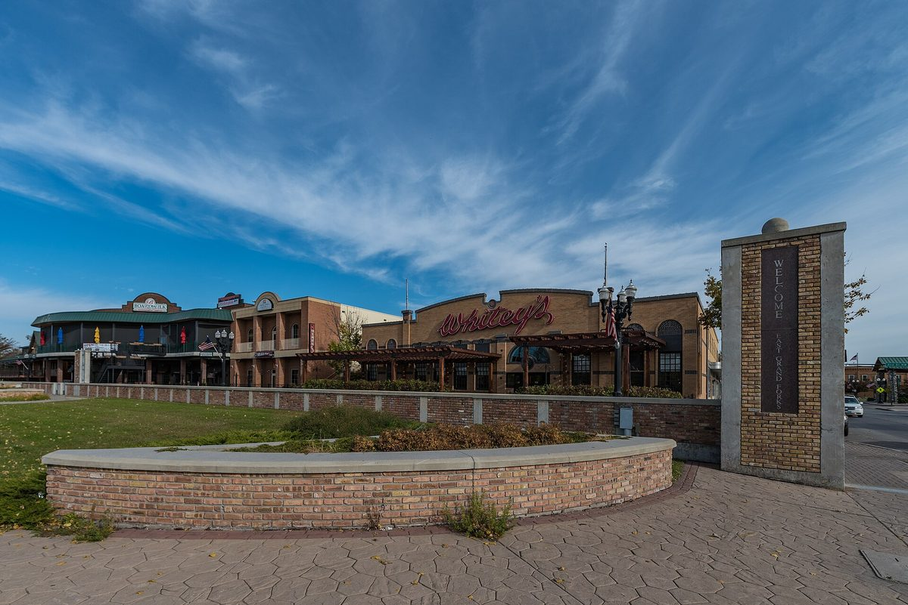

미국 미네소타 이스트그랜드포크스 교육청, 중학교 옆 부지에 120만 달러 태양광…자부담 20만 달러로 해마다 최소 5만 달러 절감 기대

연방 학교 태양광 프로그램 50만 달러 등 보조금으로 사업비 대부분 충당, 내년 초 가동·4년 안 회수 계산…보조금 조건으로 준공 6개월 안에 태양광 수업 교육과정안 내야, 주민 출자 요소는 없어
미국 미네소타주 이스트그랜드포크스 공립학교 교육청(EGFPS)이 센트럴 중학교 옆 교육청 소유 부지에 태양광 발전단지를 짓고 있다. 일부 패널은 이미 설치됐고 가동은 내년 초로 예정돼 있으며, 총사업비 120만 달러 가운데 연방 '학교 태양광(Solar for Schools)' 프로그램의 50만 달러를 비롯한 보조금이 대부분을 채워 교육청이 직접 내는 돈은 20만 달러다. 교육청은 완공 뒤 해마다 최소 5만 달러를 아껴 4년이면 비용을 회수할 것으로 보는데, 이는 센트럴 중학교 한 해 전기요금의 절반이 넘는 금액이며, 케빈 그로버(Kevin Grover) 교육감은 5만 달러가 보수적으로 잡은 최소치로 업체 제안서 대부분은 약 6만 달러를 내다봤고 첫해에는 7만 달러까지 가능하다고 말했다. 만든 전기는 모두 전력망으로 보내 전력회사가 사들이는 방식으로, 그로버 교육감은 전력회사가 전기를 "1달러당 80센트"에 사 준다고 설명했다. 패널은 최소 20년 보증에 효율 저하가 최대 22%로 정해져 있고, 약 12개 업체가 입찰한 끝에 미네소타 업체 지글러 CAT(Ziegler CAT)이 사업을 맡았으며, 교육청은 보조금 조건에 따라 준공 6개월 안에 이 발전단지를 수업에 활용하는 교육과정안을 내야 한다. 이번 사업은 교육청이 직접 짓고 소유하는 공공기관 자가 사업으로, 지역 주민이 출자하거나 지분을 갖는 요소는 들어 있지 않다.
시민에너지 관점
120만 달러짜리 발전소를 보조금으로 6분의 1인 20만 달러에 짓고 4년이면 회수한다는 계산, 그리고 보조금에 '수업에 쓰라'는 조건을 붙인 것은 학교 땅 태양광이 전기요금 절감을 넘어 공공의 교육 자산이 될 수 있음을 보여 준다. 학교가 직접 소유해 절감액이 교육 예산으로 돌아오면 그것으로 충분하다는 반론도 있겠지만, 이번 사업처럼 주민 몫이 없으면 학교 울타리 밖 이웃은 같은 동네 발전소를 바라보는 구경꾼에 머문다. 영국의 학교에너지협동조합(Schools' Energy Co-operative)은 주민 출자로 학교 지붕에 태양광을 달고 남는 수익을 학교에 돌려주는 방식으로, 학교는 설치비 부담을 덜고 주민은 지역 발전소의 주인이 되는 길을 함께 열었다. 국내에서도 학교·공공부지 태양광을 발주할 때 주민 협동조합이 지분을 갖는 방식을 선택지로 넣고, 학생의 태양광 수업과 주민 출자를 한 발전소에 묶는 사업부터 시작해야 한다.
출처: Grand Forks Herald 2026-10-28 Carter DeJong 원문 보기
米ミネソタ州イーストグランドフォークス教育区、中学校隣の敷地に120万ドルの太陽光…自己負担20万ドルで毎年最低5万ドルの節約見込み
連邦の学校太陽光プログラム50万ドルなど補助金で事業費の大半を賄い、来年初めに稼働・4年以内に回収の試算…補助金の条件として完成後6か月以内に太陽光授業の教育課程案を提出、住民出資の要素はなし
米ミネソタ州のイーストグランドフォークス公立学校教育区（EGFPS）が、セントラル中学校の隣にある教育区所有の敷地に太陽光発電所を建設している。一部のパネルはすでに設置され、稼働は来年初めの予定で、総事業費120万ドルのうち連邦の「学校太陽光（Solar for Schools）」プログラムの50万ドルをはじめとする補助金が大半を占め、教育区が直接負担するのは20万ドルにとどまる。教育区は完成後に毎年最低5万ドルを節約し、4年で費用を回収できるとみており、これはセントラル中学校の年間電気料金の半分を超える額だ。ケビン・グローバー（Kevin Grover）教育長は、5万ドルは控えめに見積もった最低額で、業者の提案書の多くは約6万ドルを見込み、初年度は7万ドルも可能だと述べた。発電した電気はすべて送電網に送って電力会社が買い取る仕組みで、グローバー教育長は電力会社が電気を「1ドルにつき80セント」で買ってくれると説明した。パネルは最低20年保証で効率低下は最大22%とされ、約12社の入札の末にミネソタ州の企業ジーグラーCAT（Ziegler CAT）が事業を受注した。教育区は補助金の条件に従い、完成後6か月以内にこの発電所を授業に生かす教育課程案を提出しなければならない。今回の事業は教育区が自ら建設し所有する公共機関の自家事業で、地域住民が出資したり持ち分を持ったりする要素は含まれていない。
市民エネルギーの視点
120万ドルの発電所を補助金によって6分の1の20万ドルで建て4年で回収するという試算、そして補助金に「授業に使うこと」という条件を付けたことは、学校用地の太陽光が電気料金の節約を超えて公共の教育資産になりうることを示している。学校が自ら所有し、節約分が教育予算に戻るならそれで十分だという反論もあるだろうが、今回のように住民の持ち分がなければ、学校の塀の外の隣人は同じ町の発電所を眺めるだけの見物人にとどまる。英国の学校エネルギー協同組合（Schools' Energy Co-operative）は、住民の出資で学校の屋根に太陽光を設置し、余った収益を学校に還元する方式で、学校は設置費の負担を減らし、住民は地域の発電所の持ち主になる道を同時に開いた。韓国でも学校・公共用地の太陽光を発注する際に住民協同組合が持ち分を持つ方式を選択肢に加え、生徒の太陽光授業と住民出資を一つの発電所で結びつける事業から始めるべきだ。
出典: Grand Forks Herald 2026-10-28 Carter DeJong 原文を読む
美国明尼苏达州东大福克斯学区在中学旁地块建设120万美元光伏电站…自付20万美元，预计每年至少节省5万美元
联邦学校太阳能项目50万美元等补助承担大部分费用，明年初投运、测算4年内收回成本…按补助条件须在完工后6个月内提交光伏教学课程方案，不含居民出资
美国明尼苏达州东大福克斯公立学区（EGFPS）正在中央中学（Central Middle School）旁一块学区自有土地上建设光伏电站。部分光伏板已经安装完毕，预计明年初投入运行；在120万美元的总投资中，包括联邦“学校太阳能（Solar for Schools）”项目50万美元在内的各类补助承担了大部分，学区直接支付的只有20万美元。学区预计完工后每年至少节省5万美元，4年即可收回成本，这一金额超过中央中学全年电费的一半。学监凯文·格罗弗（Kevin Grover）表示，5万美元是保守估计的最低值，多数承包商方案预计约6万美元，第一年有望达到7万美元。电站所发电力全部输入电网，由电力公司收购；格罗弗解释说，电力公司会以“每1美元80美分”的价格买下这些电。光伏板保证使用至少20年，效率衰减最多22%；约12家企业参与投标，最终由明尼苏达州企业Ziegler CAT承建。按照补助条件，学区须在完工后6个月内提交把这座电站用于课堂教学的课程方案。这一项目由学区自建自有，属于公共机构自用项目，不包含当地居民出资或持股的内容。
市民能源视角
借助补助，以六分之一的20万美元建成一座120万美元的电站并在4年内回本，再加上补助附带“须用于教学”的条件，说明学校土地上的光伏不只是节省电费，还可以成为公共教育资产。有人会说，学校自己拥有电站、节省的钱回到教育预算就足够了；但像这次一样没有居民份额，校墙外的邻居对同一社区的电站就只能是旁观者。英国的学校能源合作社（Schools' Energy Co-operative）以居民出资在学校屋顶安装光伏，并把盈余收益返还学校，让学校减轻安装费用负担，也让居民成为本地电站的主人。韩国在发包学校和公共用地光伏项目时，也应把居民合作社持股的方式列为选项，并从把学生光伏课程与居民出资结合在同一座电站的项目做起。
来源: Grand Forks Herald 2026-10-28 Carter DeJong 查看原文
East Grand Forks school district in Minnesota builds $1.2 million solar farm next to middle school, paying $200,000 itself and expecting at least $50,000 in savings a year
Grants including $500,000 from the federal Solar for Schools program cover most of the cost; operation due early next year with payback in four years; grant requires a solar curriculum plan within six months of completion; no resident investment involved
East Grand Forks Public Schools (EGFPS) in Minnesota is building a solar farm on district-owned land next to Central Middle School. Some panels are already in place and the farm is expected to start operating early next year; of the $1.2 million total cost, grants, led by $500,000 from the federal Solar for Schools program, cover most of the bill, leaving the district to pay $200,000. The district expects to save at least $50,000 a year once the project is finished, recovering its costs in four years, an amount equal to more than half of Central Middle School's annual electricity bill. Superintendent Kevin Grover said $50,000 is a conservative minimum, that most contractor proposals estimated about $60,000, and that savings could reach $70,000 in the first year. All the power will be sent to the grid and bought by the utility, which Grover said will pay "80 cents on the dollar." The panels carry a guarantee of at least 20 years with a maximum efficiency loss of 22%, and after about a dozen bids the contract went to Minnesota-based Ziegler CAT; under the grant terms, the district must submit a curriculum plan for using the solar farm in classes within six months of completion. The project is built and owned by the school district itself, with no element of local residents investing in it or holding a stake.
Citizen Energy View
Building a $1.2 million plant for one-sixth of that, $200,000, with payback in four years, and tying the grant to a requirement that the panels be used in lessons, shows that solar on school land can become a public educational asset and not just a way to cut power bills. Some will say it is enough for the school to own the plant and return the savings to the education budget, but without any share for residents, the neighbours beyond the school fence remain onlookers at a power plant in their own town. In the UK, the Schools' Energy Co-operative uses community investment to put solar on school roofs and returns surplus profits to the schools, easing the schools' installation costs while making local people owners of a local power plant. Korea, too, should include resident cooperative ownership as an option when tendering solar on schools and public land, starting with projects that combine students' solar lessons and residents' investment in the same plant.
Source: Grand Forks Herald 2026-10-28 Carter DeJong Read the original